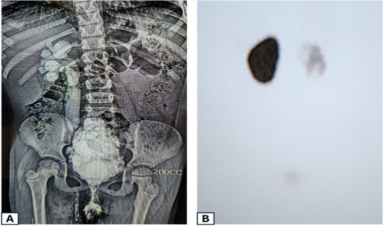
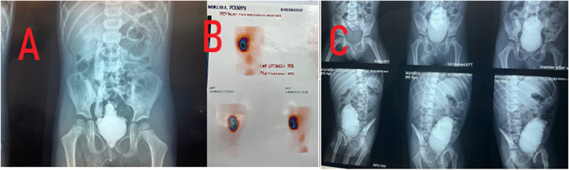

1845 — Bàng quang thần kinh ở trẻ dị tật tủy sống: hình dạng bàng quang, DLPP và bậc thang bảo vệ thận
Tags: pattern:bang-quang-day pattern:bang-quang-cay-thong pattern:trao-nguoc-nieu-quan pattern:u-nuoc-than pattern:seo-than vung:bang-quang vung:nieu-quan vung:than protocol:VCUG protocol:VUDS protocol:SA-bung protocol:DMSA score:VUR-quoc-te score:UMPIRE
Mức chắc chắn (certainty): tổng hợp y văn (literature synthesis) — hướng dẫn EAU-ESPU-ERN 2026 (PMC13136771), đoàn hệ 417 trẻ đối chiếu hình dạng bàng quang với áp lực đổ đầy (PMC12550354), nghiên cứu 61 trẻ về compliance/áp lực rò (PMID 2231938), cùng 2 ca nguyên văn có ảnh (PMC12933896; PMC11984603). Chỗ suy luận được ghi [suy luận].
Câu chốt: ở trẻ dị tật tủy sống, thứ giết thận không phải "nước tiểu ứ" mà là ÁP LỰC. Ba con số định vị toàn bộ bài: (1) áp lực cuối đổ đầy hoặc DLPP > 40 cmH₂O là yếu tố dự báo độc lập hư hại đường niệu trên; < 25 cmH₂O** là nhóm nguy cơ thấp (UMPIRE) (PMC13136771); **(2)** nhóm đã hư hại đường niệu trên có compliance **4,5 vs 11,3 mL/cmH₂O** và áp lực rò **42,3 vs 26,1 cmH₂O** so với nhóm thận bình thường (PMID 2231938); **(3)** dù theo dõi, **25% trẻ có sẹo thận trong 10 năm** (PMC13136771) — và **không tăng cường bàng quang thì sau 10 năm 30% phải mổ tăng cường, > 50% đường niệu trên xấu đi, 20% suy thận mạn (PMC13136771). Vì vậy hình dạng bàng quang trên VCUG là dấu hiệu áp lực, không phải "kiểu cho đẹp".
1. Tổng quan bệnh học – cơ chế hình ảnh
- Bệnh học: tổn thương tủy cùng/rễ cùng (thoát vị màng não tủy, bất sản xương cùng, tủy bám thấp, chấn thương) cắt mất vòng điều hòa cầu não–tủy cùng. Kết quả là hai thành phần bàng quang (detrusor) và cơ thắt ngoài mất phối hợp, mỗi thành phần có thể tăng hoạt hoặc giảm hoạt → 4 kiểu chức năng: bàng quang tăng hoạt + cơ thắt tăng hoạt; bàng quang giảm hoạt + cơ thắt tăng hoạt; bàng quang tăng hoạt + cơ thắt giảm hoạt; cả hai giảm hoạt (PMC13136771).
- TẠI SAO áp lực cao phá thận: bàng quang là bình chứa áp lực thấp; khi compliance thấp (bàng quang "cứng"), mỗi mL nước tiểu làm áp lực tăng vọt. Áp lực > 40 cmH₂O vượt áp lực đóng của lỗ niệu quản → trào ngược thứ phát, ứ nước, nhiễm trùng, sẹo nhu mô và cuối cùng suy thận. Vì thế đo áp lực (niệu động học) quan trọng hơn đo thể tích.
- TẠI SAO bàng quang thành dày — "cây thông": detrusor co bóp chống lại cơ thắt đóng kín trong nhiều năm → phì đại bó cơ (trabeculation) và túi lồi (diverticula) giữa các bó; khi đổ đầy dưới áp lực cao, bàng quang bị đẩy lên trên và hẹp dần ở đáy → hình "cây thông" (Christmas tree) hoặc "quả thông" trên phim nghiêng/fluoroscopy. Đây là dấu hiệu mạn tính của áp lực cao, không phải bẩm sinh.
- Số liệu định lượng cốt lõi:
- Ngưỡng áp lực: DLPP/áp lực cuối đổ đầy > 40 cmH₂O = nguy cơ cao; UMPIRE: < 25 cmH₂O nguy cơ thấp, ≥ 40 cmH₂O nguy cơ cao (PMC13136771).
- Đối chiếu áp lực – thận (n = 61): hư hại đường niệu trên ↔ compliance 4,5 vs 11,3 mL/cmH₂O (p = 0,001) và áp lực rò 42,3 vs 26,1 cmH₂O (p = 0,019) (PMID 2231938).
- Hậu quả dài hạn: 25% sẹo thận trong 10 năm; VUR thứ phát tới 30%; ở người lớn ~50% còn són, 15–25% suy giảm chức năng thận, ~1% suy thận giai đoạn cuối (PMC13136771).
- Hiệu quả can thiệp sớm: CIC giảm nhiễm trùng tiểu từ 60% xuống 20% sau 12 tháng; CIC + kháng cholinergic sớm giảm hư hại thận và giảm nhu cầu tăng cường bàng quang (PMC13136771).
- Hình dạng bàng quang (n = 417 trẻ, tuổi trung vị 2,6): tròn nhẵn 74%, tròn có trabeculation 10%, bầu dục nhẵn 9%, "cây thông" 4%, bầu dục trabeculation 3%; bàng quang trabeculation/"cây thông" có áp lực đổ đầy cao hơn 14–21 cmH₂O; áp lực lúc rò 43–49 cmH₂O so với 35–39 cmH₂O ở các hình khác; rò ở 26% dung tích so với 54–65% (PMC12550354).
- Liên quan hình dạng – biến chứng: VUR 41–46% vs 10%, ứ nước 29% vs 7%, rối loạn phối hợp detrusor–cơ thắt 67% vs 16% (nhóm "cây thông"/bầu dục trabeculation so với tròn nhẵn) (PMC12550354).
- Botulinum toxin: ca bất sản xương cùng 3 tuổi dùng 20 U/kg onabotulinumtoxin A vào detrusor + ~100 U vào cơ thắt ngoài, trào ngược độ cao hết sau điều trị (PMC11984603); hướng dẫn xếp BoNT-A là điều trị bậc 2 sau kháng cholinergic, hiệu quả nhất khi có detrusor tăng hoạt, kém hiệu quả ở bàng quang kém compliance/không co (PMC13136771).
2. Mẫu hình + chẩn đoán phân biệt theo vị trí (gamut)
Mẫu hình chốt: trẻ đã vá thoát vị màng não tủy/bất sản xương cùng, tiểu không tự chủ hoặc nhiễm trùng tiểu tái diễn; siêu âm thấy ứ nước; VCUG thấy bàng quang thành dày, trabeculation, "cây thông", VUR; DMSA thấy khiếm khuyết nhu mô.
- Theo hình dạng bàng quang (VCUG):
- Tròn nhẵn: áp lực thấp, tiên lượng tốt.
- Trabeculation/túi lồi: áp lực cao mạn, nguy cơ VUR.
- "Cây thông"/"quả thông": áp lực cao nhất, rò sớm ở dung tích nhỏ, VUR và ứ nước nhiều nhất.
- Bàng quang khổng lồ, thành mỏng, không co: thể giảm hoạt — khác cơ chế, dễ ứ nước do tồn lưu, không do áp lực lúc đổ đầy.
- Theo vị trí tổn thương trên hình ảnh:
- Thận: ứ nước (độ theo SFU/UTD), sẹo (DMSA), teo nhu mô.
- Niệu quản: trào ngược (độ I–V), niệu quản giãn không trào ngược.
- Bàng quang: thành dày, trabeculation, túi lồi, cổ bàng quang mở/hep.
- Cột sống: mức dị tật, tủy bám thấp, não úng thủy/Chiari II (phối hợp).
- Gamut "bàng quang thành dày ở trẻ": bàng quang thần kinh – van niệu đạo sau (PUV) – viêm bàng quang (kể cả eosinophilic) – bàng quang tăng hoạt không do thần kinh – hẹp niệu đạo – sau tăng cường bàng quang (ruột).
- Gamut "ứ nước một bên ở trẻ có dị tật tủy": VUR – khớp niệu quản–bể thận hẹp – niệu quản đôi lạc chỗ – bàng quang thần kinh gây áp lực cao – sỏi/sa lắng.
3. Bảng so sánh phân biệt (ma trận đối chiếu)
| Thực thể (entity) | Hình ảnh điển hình | Chốt vào (rule-in) | Chốt loại (rule-out) | Gợi ý xác nhận |
|---|---|---|---|---|
| Bàng quang thần kinh do dị tật tủy | Thành dày, trabeculation, "cây thông"; VUR; ứ nước; áp lực đổ đầy cao | Tiền sử thoát vị màng não tủy/bất sản xương cùng + hình dạng bàng quang + DLPP ≥ 40 cmH₂O | Bàng quang nhẵn, DLPP < 25 cmH₂O, không có tổn thương thần kinh → nghĩ nguyên nhân khác | Niệu động học + VCUG + MRI tủy |
| Van niệu đạo sau (PUV) | Bàng quang thành dày + dấu "keyhole" ở niệu đạo sau, ứ nước hai bên, bé trai | Dấu keyhole + thành bàng quang dày ở bé trai sơ sinh | Bàng quang "cây thông" không có keyhole, dị tật tủy rõ → nghĩ thần kinh | VCUG thì đi tiểu + siêu âm |
| Bàng quang tăng hoạt không do thần kinh | Thành dày nhẹ, không VUR độ cao, không ứ nước; không có tổn thương tủy | Tiểu gấp, són ngày, áp lực bình thường khi đổ đầy | DLPP ≥ 40 cmH₂O + ứ nước/sẹo → nghĩ thần kinh | Niệu động học; MRI tủy khi nghi ngờ |
| Viêm bàng quang (kể cả eosinophilic) | Thành dày lan tỏa, niêm mạc phù, có thể giả u | Đái máu, đau, thành dày nhưng áp lực bình thường, hết sau điều trị | Hình dạng "cây thông" cố định nhiều năm + áp lực cao → thần kinh | Siêu âm theo dõi; sinh thiết khi nghi u |
| Tăng cường bàng quang bằng ruột (biến chứng) | Túi lớn, thành mỏng, có thể sỏi/vỡ; nhiễm toan chuyển hóa | Tiền sử tăng cường + sỏi/thủng/thiếu B12 | Bàng quang nguyên bản, chưa mổ | CT/US + khí máu + B12 |

Bé gái 8 tuổi sau vá thoát vị màng não tủy: (A) VCUG — bàng quang hình "cây thông", trào ngược niệu quản độ 5 bên phải; (B) DMSA — thận phải mất chức năng. Nguồn: Mansy M et al., BMC Surg 2026, CC BY 4.0 (PMC12933896).Ba dấu hiệu đọc đúng trên phim
- Trabeculation: bờ trong không đều, dày từng bó, giữa các bó là túi lồi nhỏ — khác nếp gấp (mảnh, thay đổi theo độ căng) và khác bóng catheter (hình ống, di động).
- "Cây thông": bàng quang hẹp ở đáy, rộng ở đỉnh, bờ có răng cưa, thường kèm cổ bàng quang mở và rò sớm khi dung tích còn nhỏ (26% dung tích so với 54–65%) (PMC12550354).
- VUR độ 5: niệu quản và đài bể thận giãn ngoằn ngoèo, mất nhú thận — đối chiếu ngay DMSA để biết còn nhu mô chức năng hay không.
4. Protocol chụp + bậc thang điều trị
- Siêu âm bụng–tiết niệu: đo thể tích bàng quang trước và sau khi thải/CIC, độ dày thành (đo khi bàng quang đầy ≥ 50% dung tích ước tính), đánh giá ứ nước theo UTD/SFU, bề dày nhu mô thận và chiều dài thận.
- VCUG/VUDS: đổ thuốc bằng bơm với tốc độ 4% dung tích ước tính mỗi phút, ghi áp lực đổ đầy, DLPP, compliance, VUR, hình dạng bàng quang; VUDS = niệu động học kèm fluoroscopy (tiêu chuẩn "vàng" ở trung tâm chuyên khoa) (PMC12550354; PMC13136771).
- DMSA (Tc-99m): đánh giá nhu mô/sẹo, thực hiện trong năm đầu đời làm mốc, lặp lại khi có bệnh cảnh nhiễm trùng/ứ nước (PMC13136771).
- MRI tủy khi có thay đổi thần kinh mới, nghi tủy bám thấp hoặc trước khi kết luận "bàng quang thần kinh không rõ nguyên nhân"; cũng đánh giá não úng thủy/Chiari II (PMC13136771).
- Bậc thang điều trị (mục tiêu: áp lực thấp – dung tích đủ – khô):
flowchart TD
A[Bàng quang thần kinh đã xác định] --> B[Phân tầng nguy cơ: DLPP và compliance]
B -->|DLPP dưới 25| C[Nguy cơ thấp: theo dõi US + UDS định kỳ]
B -->|DLPP 25 đến 40| D[CIC + kháng cholinergic]
B -->|DLPP từ 40 trở lên| E[CIC + kháng cholinergic tích cực<br/>theo dõi sát đường niệu trên]
D --> F{Còn áp lực cao/són?}
E --> F
F -->|Có, có detrusor tăng hoạt| G[Onabotulinumtoxin A nội detrusor<br/>10 đến 20 U/kg]
F -->|Có, bàng quang co cứng| H[Cân nhắc tăng cường bàng quang]
G --> I{Còn cao?}
I -->|Có| H
H --> J[Tăng cường bàng quang<br/>± kênh dẫn tiểu tự chủ<br/>± thủ thuật cổ bàng quang]
C --> K[Theo dõi suốt đời: US, UDS, chức năng thận, B12, khí máu]
J --> K
- Theo dõi suốt đời (kể cả sau tăng cường): siêu âm + chức năng thận + khí máu + vitamin B12 (nếu dùng đoạn ruột), khám lâm sàng định kỳ vì nguy cơ ung thư muộn ở bàng quang tăng cường (PMC13136771).
5. Biến thể bình thường và cạm bẫy
- Biến thể bình thường: bàng quang "cây thông" nhẹ khi bàng quang căng tối đa hoặc khi bé gồng — luôn đọc ở nửa dung tích và đối chiếu áp lực; trabeculation thoáng qua khi nhiễm trùng; ứ nước nhẹ thoáng qua khi bàng quang quá căng, hết sau CIC.
- Cạm bẫy 1 — chẩn đoán "bàng quang thần kinh" chỉ bằng hình dạng: hình dạng không đủ phân biệt mức độ rối loạn; trong 417 trẻ, rối loạn nặng có ở mọi hình dạng (4–19%) nên không dùng hình dạng để thay niệu động học (PMC12550354).
- Cạm bẫy 2 — VCUG bơm quá nhanh/quá căng: áp lực giả tạo → VUR giả và rò giả; chuẩn là 4% dung tích ước tính/phút (PMC12550354).
- Cạm bẫy 3 — DMSA quá sớm sau nhiễm trùng: khiếm khuyết do viêm bể thận cấp có thể hồi phục; nên chụp sau 6 tháng hoặc khi hết viêm để không gọi nhầm "sẹo vĩnh viễn" [suy luận].
- Cạm bẫy 4 — bỏ sót tủy bám thấp: trẻ đã vá thoát vị thay đổi kiểu tiểu (đang khô lại són, tăng áp lực) → phải MRI tủy, không chỉ tăng liều thuốc (PMC13136771).
- Cạm bẫy 5 — quên thận sau khi đã "ổn định": 25% có sẹo thận trong 10 năm dù theo dõi; ứ nước có thể tiến triển âm thầm khi trẻ không còn són — theo dõi siêu âm + chức năng thận mới là mục tiêu, không phải "khô tã".
- Cạm bẫy 6 — botulinum toxin ở bàng quang co cứng: BoNT-A hiệu quả khi có detrusor tăng hoạt, kém hiệu quả ở bàng quang kém compliance/không co — tiêm sai nhóm là tiền vô ích và trì hoãn tăng cường bàng quang (PMC13136771).
6. Tự lượng giá — Blind Quiz ngay trên trang tĩnh
Ca 1 — Bàng quang "cây thông" và thận mất chức năng
- Gợi ý lâm sàng: bé gái 8 tuổi, đã vá thoát vị màng não tủy, tiểu không tự chủ, nhiễm trùng tiểu tái diễn.
- Câu hỏi: (1) Mô tả hình dạng bàng quang và bất thường bên phải trên phim A. (2) Phim B trả lời câu hỏi gì? (3) Vì sao "khô tã" chưa đủ là mục tiêu?
Bấm để hiện đáp án (findings + chẩn đoán)
- Dấu hiệu: (A) bàng quang hẹp đáy, rộng đỉnh, bờ răng cưa = hình "cây thông"; trào ngược độ 5 bên phải với niệu quản–đài bể thận giãn ngoằn ngoèo. (B) DMSA: thận phải gần như không bắt xạ = mất chức năng.
- Chẩn đoán: bàng quang thần kinh sau vá thoát vị màng não tủy, áp lực cao mạn → VUR thứ phát + teo nhu mô thận phải.
- Vì sao: hình "cây thông" = phì đại detrusor chống cơ thắt; thận đã mất là hậu quả không hồi phục — nên mục tiêu là bảo vệ thận còn lại, không phải chỉ giữ khô.
- Nguồn ảnh: Mansy M et al., BMC Surg 2026, CC BY 4.0 (PMC12933896).
Ca 2 — Trước và sau botulinum toxin

- Gợi ý lâm sàng: bé trai 3 tuổi, bất sản xương cùng, bàng quang thần kinh, trào ngược độ cao, creatinin tăng nhẹ.
- Câu hỏi: (1) Phim A và C khác nhau ở đâu? (2) Phim B cho biết gì? (3) Liều BoNT-A trong ca này và vì sao tiêm cả detrusor lẫn cơ thắt ngoài?
Bấm để hiện đáp án (findings + chẩn đoán)
- Dấu hiệu: (A) bàng quang nhỏ, thành dày, trào ngược; (C) sau điều trị — bàng quang dung tích lớn hơn, bờ mềm hơn, trào ngược phải hết; (B) DMSA — thận trái 31% / phải 69%, còn nhu mô cả hai bên.
- Chẩn đoán: bàng quang thần kinh do bất sản xương cùng, điều trị onabotulinumtoxin A 20 U/kg vào detrusor + ~100 U vào cơ thắt ngoài (3, 9, 6 giờ); creatinin giảm, trào ngược hết.
- Vì sao: tiêm detrusor giảm áp lực đổ đầy; tiêm cơ thắt giảm lực cản khi thải — phối hợp khi có cả tăng hoạt detrusor và cơ thắt tăng trương lực.
- Nguồn ảnh: Saberi N, Jandaghi FS, Urol Case Rep 2025, CC BY-NC-ND (PMC11984603).
Ca 3 — Chỉ có con số niệu động học
- Gợi ý lâm sàng: bé gái 5 tuổi dị tật tủy, đang CIC 5 lần/ngày + oxybutynin; không còn són nhưng siêu âm mới thấy ứ nước độ 2 bên trái.
- Số liệu: dung tích đạt 180 mL (ước tính 220 mL); áp lực cuối đổ đầy 46 cmH₂O; compliance 5,8 mL/cmH₂O; DLPP 52 cmH₂O; không có trào ngược trên VCUG.
- Câu hỏi: (1) Bệnh nhân thuộc nhóm nguy cơ nào? (2) Vì sao "không són" mà vẫn ứ nước? (3) Ba bước xử trí tiếp theo.
Bấm để hiện đáp án (findings + chẩn đoán)
- Phân tầng: nguy cơ cao — DLPP 52 cmH₂O và áp lực cuối đổ đầy 46 cmH₂O đều > 40 cmH₂O, compliance 5,8 mL/cmH₂O (nhóm hư hại thận trong nghiên cứu 61 trẻ có compliance 4,5 so với 11,3 mL/cmH₂O) (PMID 2231938; PMC13136771).
- Vì sao không són mà vẫn ứ nước: "khô" nhờ CIC + thuốc nhưng bàng quang vẫn cứng; áp lực cao truyền ngược lên niệu quản dù không có trào ngược trên VCUG (trào ngược có thể ngắt quãng, chỉ xuất hiện khi áp lực đỉnh).
- Xử trí: (1) tối ưu kháng cholinergic/kiểm tra tuân thủ và kỹ thuật CIC; (2) BoNT-A nội detrusor nếu còn detrusor tăng hoạt; (3) nếu áp lực vẫn ≥ 40 cmH₂O → cân nhắc tăng cường bàng quang, đồng thời theo dõi siêu âm/chức năng thận.
- Lưu ý: ca này là suy luận từ ngưỡng trong hướng dẫn, không phải ca nguyên văn.
Bài liên quan chéo
- 1749 — Hội chứng nhân đôi đuôi / caudal duplication
- 1719 — Bàng quang đôi, vách bàng quang và nang niệu rốn ở trẻ
- 635 — Dị tật tiết niệu nhi: SFU, VUR, PUV
- 3086 — Nhiễm trùng niệu do sonde (CAUTI) ở trẻ và cai sonde
- 3089 — Thiếu B12 sau tăng dung tích bàng quang
Không dùng để chẩn đoán độc lập khi chưa có người hướng dẫn.